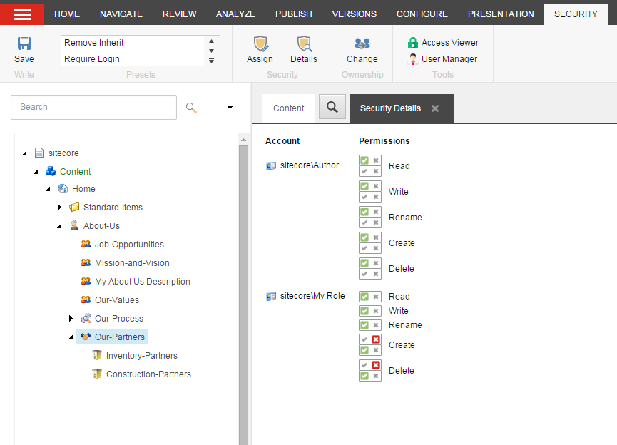
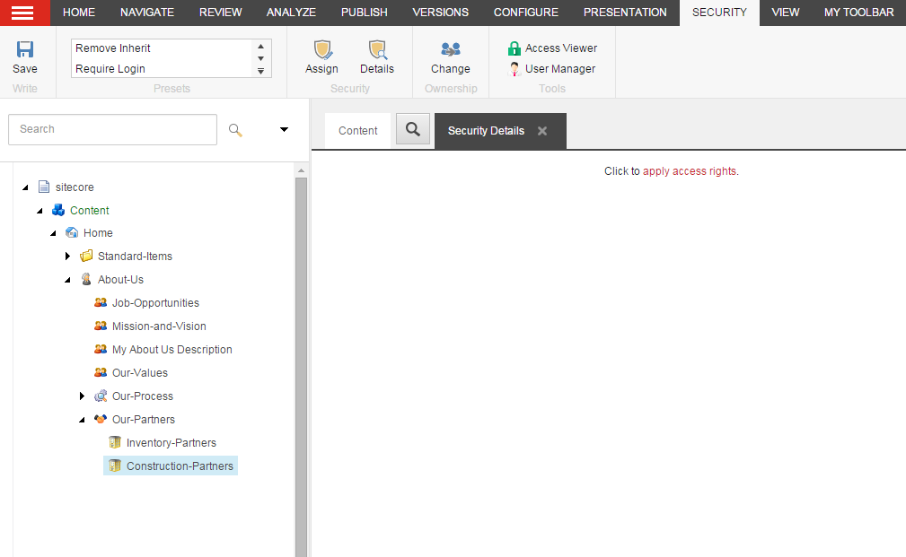
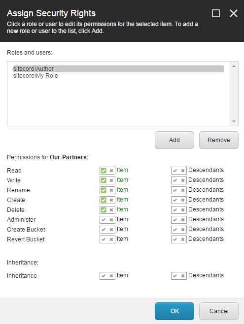

View the access rights of a security account
How to view and edit access rights in the Access Viewer and the Content Editor.
In the Security Editor, you can see the access rights that are assigned to an account, but from the Access Viewer and from the Content Editor, you can see the full result of the combinations of access rights for an individual item.
Note
Only users with the Sitecore Client Security role can use the Access Viewer.
To see the access rights that each role has to items in the Access Viewer:
Log in to XM Cloud.
On the Dashboard, on the Tools tab, click Access Viewer.

In the Access Viewer, in the Roles and users group, click the security account that you want to see the assigned access rights for.
If the role or user is not visible, click the drop-down arrow and click the security account from the list.
If the role or user is not visible in the list, click Account and in the Add an Account dialog box, in the Account Type section, click the relevant account type and then the relevant role or user from the list.

For each item in the content tree, you can see the access rights that the selected role or user has assigned.
Important
The content tree in the Access Viewer doesn't update automatically. Collapse and expand the relevant nodes to refresh them and see the latest changes.
To see the details for an individual access right, click the relevant access right and the result of all the access rights that are assigned to an item appear in the pane on the right.
In this example, you can see that My Role has been granted the Write access right to My item, but My item is part of the Sample Workflow, which denies the access rights Write and Delete. Therefore, the account My Role denied those two access rights for that particular item. This information is only available to you from the Access Viewer.

The keys in the Access Viewer:
Not Specified – if nothing is specified on an access right, it is denied by default.
Allowed – the security account is granted the access right on the item.
Denied – the security account is denied the access right on the item.
Item vs. Descendant Right – the access right assigned to the item is different from the access right assigned to the descendants. The upper icon applies to the item and the lower icon applies to the descendants.
Protected – a protected item is unavailable in the content tree and therefore protected from any editing. You cannot assign any access rights to a protected item.
Not Applicable – no access rights have been specified for the item. This key appears only in the item details in the pane on the right.
To see an overview of the security accounts that have been assigned explicit access rights to an item:
Open the Content Editor and in the content tree, click the relevant item.
Click the Security tab, and in the Security group, click Details.
The Security Details tab in the content pane displays a list of the roles that have been assigned explicit access rights to the current item.
If there are no access rights assigned explicitly to the item, click the link apply access rights to assign the relevant access rights.
To change the access rights assigned explicitly for the selected item, in the Security group, click Assign to open the Assign Security Rights dialog box.
